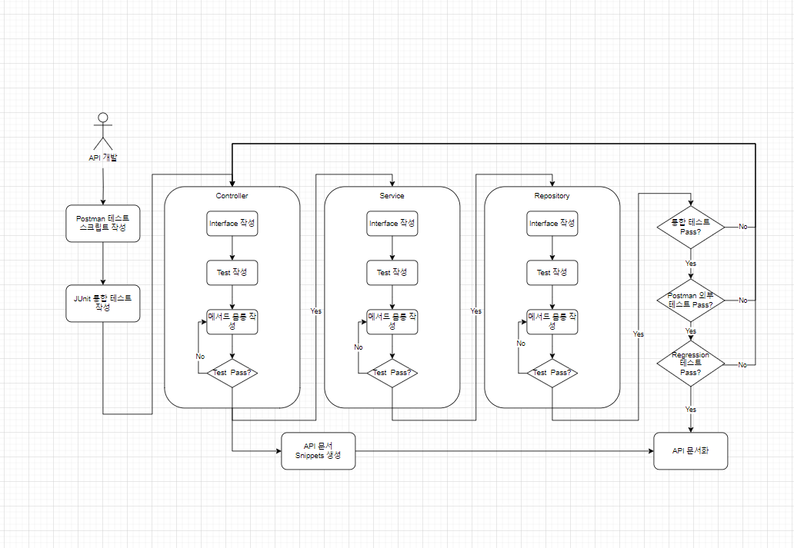
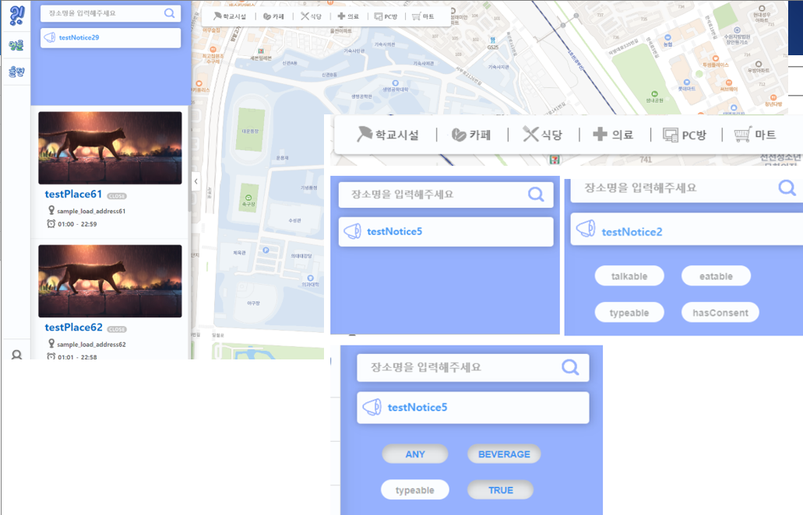
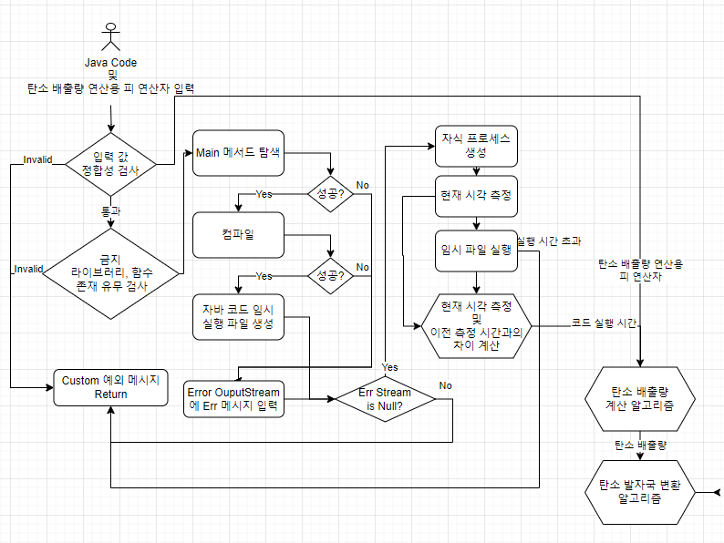
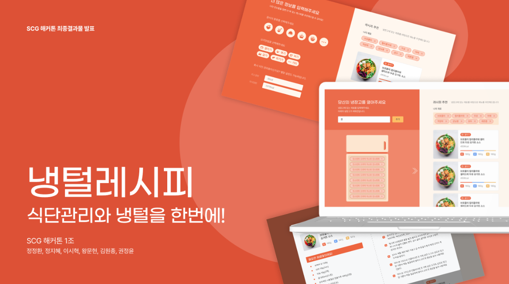

이 시혁
Backend Developer
ABOUT ME
개발을 즐기는 개발자 이시혁입니다.
끊임없이 발전하기 위해 노력하고 있으며 다 함께 성장하는 문화를 만들고자 노력합니다.
객체 지향 언어의 매력에 빠져 있으며 유지보수성과 Clean Code를 지속적으로 학습하고 있습니다.
테스트를 통한 안정감과 자신감을 느끼는 것을 좋아합니다.
SKILLS
Backend Developer
2021 - Now
Programming Language
Java, C, C++, JavaScript, Python, Kotlin
Backend
Spring Boot, Spring Data JPA, Query Dsl, Spring Rest Docs
Django, Flask
MySQL, MariaDB, MongoDB
Frontend
Html, Css, JQuery
Communication & DevOps
Github, Notion, Slack
AWS, Docker
Linux 커맨드 및 개발환경
ACTIVITIES
LIKELION SEOUL
2022 - 2023
For Backend Developer
With Python / Django, Java / Spring
성균관대학교 소프트웨어 동아리 Skku.D
2023 - NOW
백엔드 팀장
With Java / Spring
EDUCATION
성균관대학교
2017 - NOW
Major
정치외교학과
Minor
소프트웨어학과
저동고등학교
2013 - 2015
Projects
Copus - 한국 고전 DB
2022.09.10 ~ 2022.10.07
팀장
멋쟁이사자처럼
메인 이슈 - 상황
- Xml 형식으로 주어지는 한국 고전을 클라이언트가 웹을 거치지 않고 직접 DB에 삽입 희망
- Xml 상위 tag를 이용한 categorization 및 Transaction 사용 필요성에 의한 RDBMS 사용 결정
메인 이슈 - 이슈
- 비정형적인 xml을 RDB에 파싱해야 했음 (테이블 설계 및 데이터 전처리 이슈)
- 클라이언트 요구에 맞는 데이터 파싱 아키텍처 설계
메인 이슈 - 해결
- Hierarchy한 분류 정보는 외래키 연쇄로 풀고, 실 데이터는 별도의 테이블로 분리하여 해결
- w3c.dom, JPA 라이브러리 사용 및 jar 실행 파일 빌드 후 데이터 파싱 bash 스크립트 파일 작성
- 향후 데이터 가공 파이프라인에 어긋나는 데이터 대비한 Custom Exception 작성
- 클라이언트에게 스크립트 파일, jar 파일과 실행 방법 전달
Source
https://github.com/CharmingSeuI/Copus-B.E
https://github.com/CharmingSeuI/parser
Skklub – 성균관대학교 종합 동아리 서비스
2023.06.26 ~ 2023.09.24
백엔드 팀장
성균관대학교 소프트웨어학과 동아리 Skku.D
메인 이슈 - 상황
- 상대적으로 이용이 많은 학기 시작 전까지 안정적인 서버 구축 필요
- 동아리 백엔드 메인 스택 전환 등의 이유로 Spring, RDB로 이전함에 따라 제로베이스 구현
메인 이슈 - 도입 방법
- 백엔드 팀원 3명이 각각 담당 분야를 parallel하게 구현 후 통합 (Spring, DevOps, 인증/인가로 분리)
- 통합 및 배포 이후 생길 문제를 최소화 하기 위해 test plan 마련(단위, 통합 테스트, 외부 테스트 작성)
- custom exception 및 handler를 통한 예외 상황의 test 병행
- notion, github을 활용한 지속적인 문서화
메인 이슈 - 결과
- 짧은 기간 내 큰 이슈 없이 프로젝트 완성 및 테스트 프로세스 덕분에 기능 추가/수정 시 Regression Test 자동 병행, 빠르고 안정적인 유지 보수
Source
https://github.com/SKKUD/skklub-backend
https://github.com/wndyd0131/skklub-docs
테스트 프로세스
동아리 백엔드 세미나 – 스터디 운영
2023.09.04 ~ 2023.11.30
강의자(동아리 백엔드 팀장)
성균관대학교 소프트웨어학과 동아리 Skku.D
운영
- 메인 : 김영한 강사님 Spring 강의 (인프런)
- 매주 과제 발행 : coding, 문서 작성, 영상 시청, 쿼리 작성 등
- 매주 일요일 11시 ~ 익일 1,2시 온라인 강의 진행
- 프로젝트 진행도에 따라 코드 리뷰 및 질의 응답
- 개인 질의응답 및 코드리뷰 별도 운영
Contents
- Java, Spring, OOP
- 데이터베이스
- Test, TDD
- 웹, Restful API
- 협업 process, Documentation
강의 자료
https://github.com/tlgur/TIL/tree/main/%EC%8A%A4%ED%84%B0%EB%94%94
열었나요?! – 성균관대학교 내·외부 편의시설 조회 서비스
2023.06.26 ~ 2023.09.24
개인
메인 이슈 - 의도
시설별 운영 정보 조회 사용자 경험 향상을 위해 분류 기능 도입. 그러나 다양한 시설 종류 핸들링 및 각 시설별 분류 정보 처리 이슈 발생
- 시설 종류 추가/변동 가능성에 따라 시설 별 분류 정보 관리를 위해 분류 정보를 Rest API를 통해 서버에서 발행 후 다시 동적으로 조회하는 기능 구현 시도
메인 이슈 - 개선 전
- 시설 별 API 분리, 모든 검색 조건 경우에 메서드 오버로딩을 통해 쿼리 작성
- 시설 종류 확장성 저해 및 모든 필터링 경우의 수 커버 불가 문제 발생
메인 이슈 - 개선 방법
- Rest API의 응답 값을 시설 Super Class를 이용, 여러 분류 정보 조회 API들을 하나로 통합, 동적 응답 및 구현 성공
- Query Dsl 사용, 시설 별 검색 조건이 고정되지 않은 API 구현
Source
https://github.com/tlgur/Is-Open-BE
https://github.com/tlgur/Is-Open-FE
ECO2 – 자바 코드 탄소배출량 계산 서비스
2023.11.18 ~ 2023.12.08
백엔드 팀원
성균관대학교 소프트웨어공학개론 팀프로젝트
메인 이슈 - 상황
- 서버로 입력되는 자바 코드의 컴파일 및 실행 시간 측정 기능 필요
메인 이슈 - 이슈
- Spring의 스레드 풀 관련 Context Switching으로 인한 실행 시간 왜곡 문제 발생 가능성
- 위협적인 코드 관리 프로세스 : 시스템 콜 라이브러리 import 혹은 무한 루프문 고의 입력과 같은 Dos 어택 고려 필요
메인 이슈 - 해결
- 실행 시점 측정&감산 로직 디버깅, Context Switching에 의해 실행 시간 왜곡 문제 확인
- 자식 프로세스 생성 로직을 추가함으로써 왜곡 문제 해결했으나 최대 실행 시간 조절 불가능 문제로 인해 Dos 어택 취약 이슈
- Java Process.waitFor 함수를 추가, 최대 대기 시간 설정을 통해 Dos 공격 Handling 성공
Source
https://github.com/skkuse/2023fall_41class_team7/tree/backend_V3
냉털 레시피 – 냉장고 잔여 재료를 사용하는 요리 검색 서비스
2024.01.06 ~ 2024.01.07
백엔드 팀원
성균관대학교 개발동아리 연합
메인 이슈 - 상황
- 레시피 조회 API 응답값인 Open API 요청 key(index)값 탐색 및 DB에 영속화 필요
- 서버 API에 필터링 기능 추가를 위해 Open API 데이터 중 일부 필드 key값과 같이 영속화 필요
메인 이슈 - 해결
1. Spring RestTemplate를 사용, Open API에 존재하는 데이터 전수 동기적 요청
– index값이 데이터와 무관한 식품안전나라 rownum값, 전수 요청 불가피 및 비동기 처리 불가
2. API xml 데이터로서 요청, 정규 표현식, String 함수 사용하여 비정형적인 데이터 전처리
3. data.xml 생성 및 처리한 데이터 출력
4. w3c.dom 라이브러리 사용하여 xml 데이터 이용 entity 인스턴스 생성
5. Data JPA를 통해 생성한 인스턴스 리스트 영속화
Source
https://github.com/23-24-winter-hackathon/team1-backend
